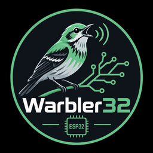

Flash the firmware directly from your browser — no installs, no cable-side software.
Works in Chrome or Edge — this uses the Web Serial API, which Safari does not support (Firefox has very recently added support in the newest versions). Connect the board via the USB port labeled "UART" (not "USB" — that one's only used for a USB microphone).
Not sure? It's printed on the module (the metal-can chip) — the "R" number is what matters. N8R8 is the current default Espressif board.